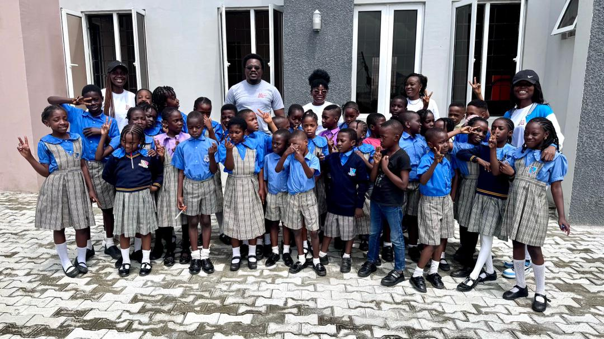
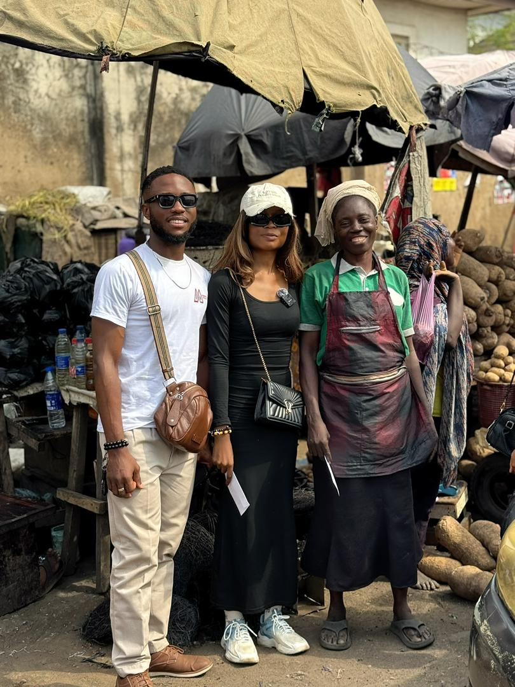
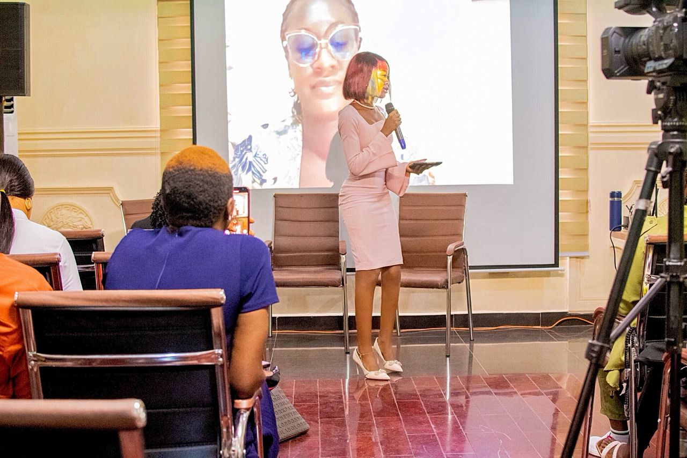

Four flagship programs forming a connected pathway — from a young person's first line of code to leadership in the AI economy.

YouthCoding is our flagship program — coding and digital skills for African youth, delivered through hands-on, project-based learning. Cohorts run multiple times a year and culminate in a public showcase of student projects.
A foundational program introducing young people to artificial intelligence — how it works, where it shows up in everyday life, and the career pathways it's opening up. Designed to build confidence with the language and tools of AI.

A dedicated track for young women advancing in AI careers. Combines structured learning, mentor pairing with senior practitioners, and access to a growing network of women shaping the AI industry across Africa.
We can't reach every student — but every teacher we equip can. The Fellowship gives educators the curriculum, classroom resources, and community they need to confidently introduce AI literacy in their schools.

Each program stands alone — but together they form a pathway from first code to AI leadership.
Whether you're 14 or 40, there's a way to be part of what we're building.